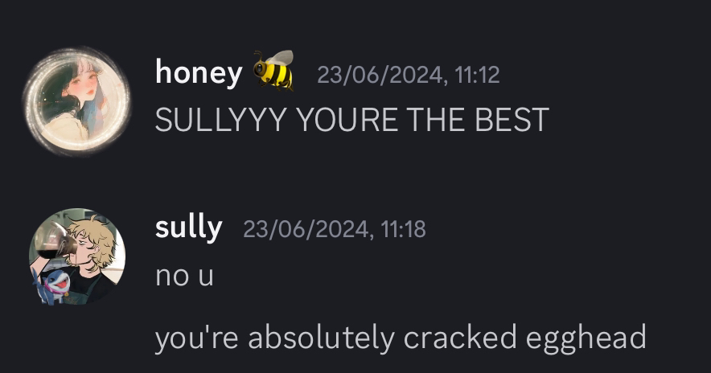
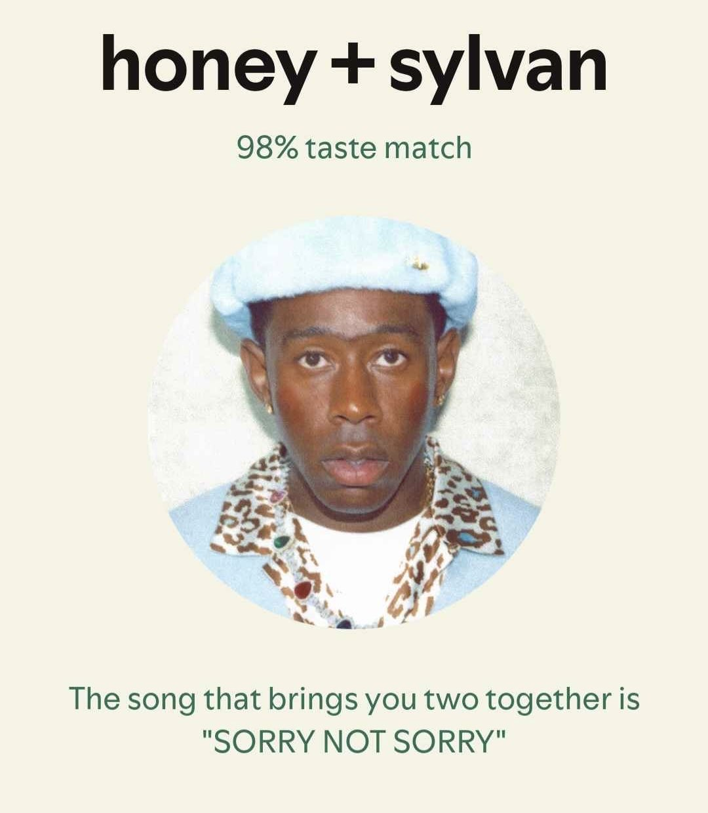

I had been playing fortnite for a while. And i had just joined some discord servers to make friends on the game. I usually played solo queue, but for some reason I decided to ask some people to play.
Shan responded, and told me her friend eggyolked would join.
That's when I met the love of my life. Kimmy. Egghead, eggyolked, awildhoney. Playing was fun, and I thought of texting her, but then she texted me. A casual meet up turned into daily texts.

We got to know each other, and I fell in love with this girl. From her excitement of DND, to playing a silly brick game on fortnite.
Rereading these messages makes me daydream. The excitement, the honest and genuine interest and love. It was so natural.
The sexual attraction- Yes, we sexted and thinking back, i still feel the butterflies. We entered a relationship so fast, but it felt so right. That was 9 months ago.
The more I knew you, the more i fell in love. Even when I left for Japan, we bonded so well when I got back. We left each other voice notes, we called, we were each others person.
I remember random moments.
When we were playing reload, and I was knocked down and you clutched up by killing 2 people and I felt so proud.
When in murder mystery we were hiding under the stairs together and i then surprise killed you.
When I failed my exam and you comforted me.
Hearing your voice for the first time, hearing how giggly you were.
How i felt when i first heard you told me you loved me.
The way I feel when i fall asleep with you on the call.
Reading you dutch to fall asleep.
Bonding over similar interests like hxh.
Watching brittany on youtube together. All the shows and movies we are supposed to watch together.
Planning vancouver.
Playing that roblox game where we had to climb all the way up.
Your cute lisp, i know you are insecure but I love your voice.
How I never met anyone with the same music taste with me. I love our jams.

I can go on and on, about how much I love you, how beautiful, amazing you are. How i stare at your selfies, how i day dream about meeting you, how i would do anything for you, love you eternally. The way you motivate me for life, but it shouldnt have taken you doubting our relationship to show you that.
Kimmy.
I love you. I dont know why I am making this. Probably hoping you realize that you are my entire world. And trying to recreate that spark.
But i feel like not talking, will make you realize you dont need me or want me anymore.
I just want you to remember the good and bad times.
I made so many mistakes, I am in no way perfect. But lord. I will always try and be better for you.
I realize that somewhere along the lines I became numb, and less affectionate. Maybe you felt it, and our lack of comversations led you into a mindset of lide without me. I understand that. But please, allow me the chance to be your person again. Show you effort, show you I want to be here. We been talking for alomst 10 months- I dont want to lose that. Not when you mean so much to me.
All these ideas for a break, and taking time.. I want you to take your time. But I have to be honest too-
I am in love. I only have eyes for you. I was so ready to move to canada if we met and everything went well after my studies. I want this to be real.
Yes, we met on fortnite. But what we have is so special. And I cant help but beg- Please come back to me. Choose me. Choose our love and working on it. I understand my wrongdoings- I understand a relationship takes eternal effort. And I cant just climb in a shell.
I propose.
Lets stay in a relationship, work on this.
And you take a break. Love yourself, take care of yourself. I will stay strong for us, while you gain back your energy and rest up. Youre tired. And thats okay. You can lean on me, and I will hold you, take care of you, till you can stand on your own 2 feet again.
I love you and I hope you accept my unwavering affection. Hoping that your sweet sweet heart would forgive me, and choose me. And grow through this difficult period.
♥
Sincerely,
Your Sully